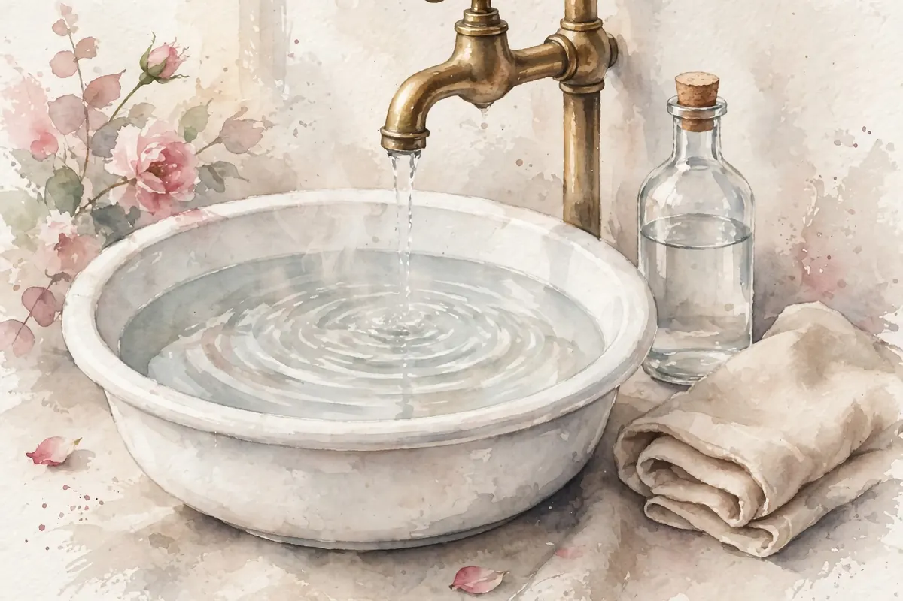
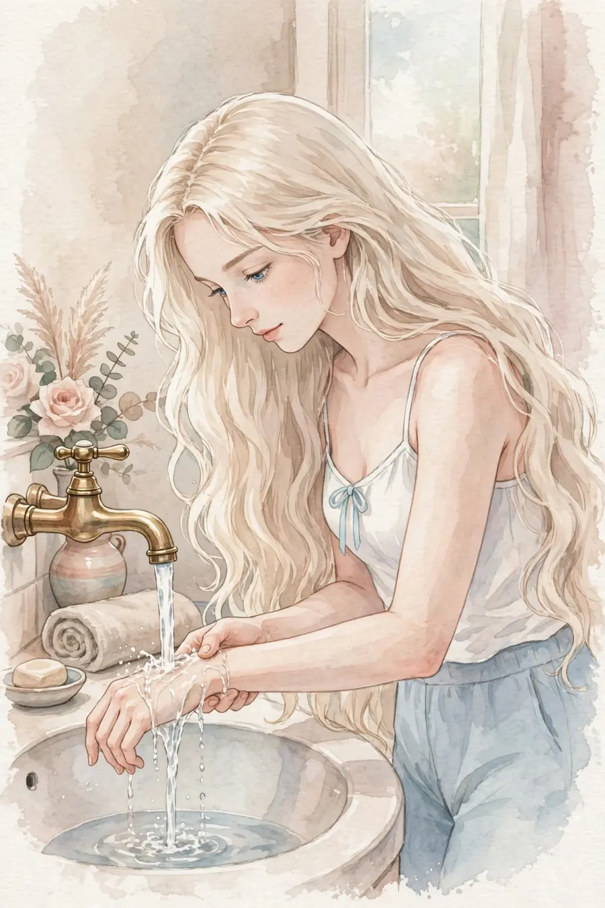

洗顔のお湯の温度、目安の考え方

洗顔の温度は、意外と無意識に決まっています。冬は熱め、夏は冷ため、となりがちですが、顔の肌にとっての心地よさは、体感とは少しずれます。施術でも水温の管理は基本のひとつです。この記事では、温度の目安の考え方を整理します。
基本は「ぬるま湯」、熱すぎは避ける
一般に、洗顔には体温に近い温度からやや低めの「ぬるま湯」がよいとされます。熱いお湯は、洗い上がりがさっぱりする感覚がありますが、必要な皮脂まで流れやすく、洗ったあとの乾燥感につながることがあります。逆に冷たすぎる水は、皮脂が固まって流れにくく、すすぎ残しの原因になります。
数字の目安としては、32〜34度あたりがよく挙げられます。ただし、家庭で毎回測るのは現実的ではありません。数字は知識として持ち、実際の判断は手の感覚で行うのが実用的です。
手の感覚で確かめる方法
手首の内側は温度に敏感な場所です。洗顔の前に、手首の内側にお湯をかけて、「熱くも冷たくもない」と感じる温度を基準にしてください。手のひらは温度に慣れやすいので、手首で確かめるほうがぶれが少なくなります。
季節によって体感は変わります。冬は同じ温度でも冷たく感じ、夏はぬるく感じます。給湯器の設定温度を季節ごとに大きく変えている家庭では、洗顔のときに混合水栓で調整する習慣を持っておくと、毎日の温度が安定します。
シャワーで流すときの注意
入浴中にシャワーで直接顔を流す方は、水圧と温度の両方に注意が必要です。体のついでに出すシャワーは、顔には熱すぎることがあります。顔を流すときだけ温度を下げる、あるいは手に受けてから流すなど、ひと手間を決めておくと安心です。
温度の管理は地味なテーマですが、毎日2回の洗顔で積み重なるものです。洗ったあとの肌の感触がいつもと違う日が続くなら、まず温度を見直してみてください。それでも気になる場合は、皮膚科などの専門家への相談も検討を。
給湯の設定は、家族と共有しておく
給湯器の温度設定は、家族全員が使うものです。冬に設定を上げた場合、洗顔のときの体感も変わります。設定を変えたら、洗面所を使う家族にも一言伝えておくと、それぞれの調整がしやすくなります。温度の感覚は人によって違うので、「自分のぬるま湯」を手首で確かめる習慣が、家庭内でも共通の基準になります。
小さな子どもや高齢の家族がいる家庭では、やけど防止の観点からも、給湯温度の管理は大切です。洗顔の温度の話は、家の水まわり全体の安全の話にもつながります。毎日の小さな確認が、家庭の安心を支えています。
温度の感じ方は、その日の体調や室温でも変わります。寒い日に帰宅した直後は、手が冷えていて温度の判断がぶれやすくなります。手を温めてから確かめる、最初のひとすくいを手首にかける、といった小さな手順を挟むと、判断が安定します。
洗顔の温度は、誰かに決めてもらうものではありません。自分の手の感覚を基準として育てていくものです。感覚の基準ができれば、旅先や実家など、いつもと違う水まわりでも、同じ温度を再現できます。温度管理は、場所を選ばない技術なのです。
温度の目安を持つことは、家族に洗顔を教える場面でも役立ちます。「熱くも冷たくもない温度だよ」という伝え方に、手首で確かめる方法を添えると、感覚が共有しやすくなります。感覚の共有は、数字の共有より難しいものです。確かめる場所を決めることが、その近道になります。
入浴のついでに洗顔する場合は、湯船の温度と洗顔の温度は別物として考えてください。体を温めるための温度と、顔を洗うための温度は、適した範囲が違います。洗面器に分けて用意するなど、場面ごとの使い分けが基本です。
小さな温度の差は、毎日の積み重ねの中で効いてきます。今日の洗顔から、手首での確認を一度試してみてください。

セラフィナ「温度は手首の内側で確かめる。それがぶれない目安だね」